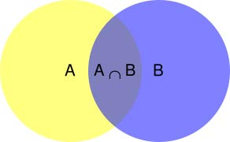
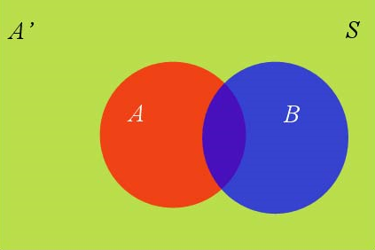
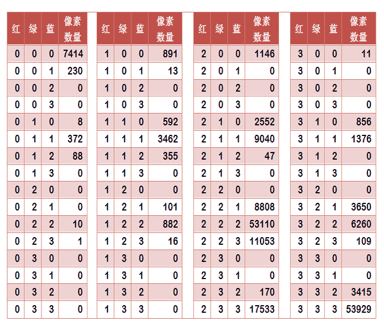
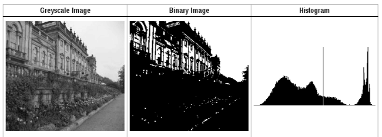

Algorithm Scrap
Table of Contents
1 KMP 字符串匹配算法
字符串匹配 是计算机的基本任务之一。许多算法可以完成这个任务，Knuth-Morris-Pratt 算法（简称 KMP）是最常用的之一。它以三个发明者命名，K 就是著名科学家 Donald Knuth。这种算法不太容易理解，网上有很多解释，但读起来都很费劲。直到读到 Jake Boxer 的 The Knuth-Morris-Pratt Algorithm in my own words，我才真正理解这种算法。
字符串 BBC ABCDAB ABCDABCDABDE 的第一个字符与搜索词 ABCDABD 的第一个字符，进行比较。因为 B 与 A 不匹配，所以搜索词后移一位：

直到字符串有一个字符，与搜索词的第一个字符相同为止：

接着比较字符串和搜索词的下一个字符，直到字符串有一个字符，与搜索词对应的字符不相同为止：

最自然的反应是，将搜索词整个后移一位，再从头逐个比较。这样做虽然可行，但是效率很差，因为要把搜索位置移到已经比较过的位置，重比一遍。一个基本事实是， 当空格与 D 不匹配时，已经知道前面 6 个字符是 ABCDAB 。KMP 算法的想法是，设法利用这个已知信息，不把搜索位置移回已经比较过的位置，继续向后移，这样就提高了效率。
可以针对搜索词，算出一张 部分匹配表 （partial match table）。空格与 D 不匹配时，前面六个字符 ABCDAB 是匹配的。查表可知，最后一个匹配字符 B 对应的「部分匹配值」为 2，按照公式算出向后移动的位数： 移动位数 = 已匹配的字符数 - 对应的部分匹配值 。因为 6 - 2 = 4，所以将搜索词向后移动 4 位：

因为空格与 C 不匹配，搜索词还要继续往后移。这时，已匹配的字符数为 2，「部分匹配值」为 0。所以，移动位数为 2：

以此类推，直到搜索词的最后一位，发现完全匹配，于是搜索完成。如果还要继续搜索（即找出全部匹配），移动位数 7 - 0 = 7，这里就不再重复了。

1.1 部分匹配表
首先，要了解两个概念：「前缀」和「后缀」。 「前缀」指除了最后一个字符以外，一个字符串的全部头部组合；「后缀」指除了第一个字符以外，一个字符串的全部尾部组合。 「部分匹配值」就是「前缀」和「后缀」的最长的共有元素的长度。
| 前缀 | 后缀 | 共有元素长度 | |
|---|---|---|---|
A |
空集 | 空集 | 0 |
AB |
[A] |
[B] |
0 |
ABC |
[A, AB] |
[BC, C] |
0 |
ABCD |
[A, AB, ABC] |
[BCD, CD, D] |
0 |
ABCDA |
[A, AB, ABC, ABCD] |
[BCDA, CDA, DA, A] |
1 |
ABCDAB |
[A, AB, ABC, ABCD, ABCDA] |
[BCDAB, CDAB, DAB, AB, B] |
2 |
ABCDABD |
[A, AB, ABC, ABCD, ABCDA, ABCDAB] |
[BCDABD, CDABD, DABD, ABD, BD, D] |
0 |
「部分匹配」的实质是：字符串头部和尾部有重复。比如， ABCDAB 之中有两个 AB ，那么它的「部分匹配值」就是 2。搜索词移动的时候，第一个 AB 向后移动 4 位（字符串长度 - 部分匹配值），就可以来到第二个 AB 的位置。
2 Boyer-Moore 字符串匹配算法
KMP 算法不是效率最高的算法，实际采用并不多。各种文本编辑器的「查找」功能，大多采用 Boyer-Moore 算法。Boyer-Moore 算法不仅效率高，而且构思巧妙，容易理解。1977 年，德克萨斯大学的 Robert S. Boyer 教授和 J Strother Moore 教授发明了这种算法。
假定字符串为 HERE IS A SIMPLE EXAMPLE ，搜索词为 EXAMPLE 。
首先，字符串与搜索词头部对齐，从尾部开始比较。如果尾部字符不匹配，那么只要一次比较，就可以知道前 7 个字符肯定不是要找的结果。 S 与 E 不匹配， S 被称为「坏字符」（bad character），即不匹配的字符：

还发现， S 不包含在搜索词 EXAMPLE 之中，这意味着可以把搜索词直接移到 S 的后一位。 依然从尾部开始比较，发现 P 与 E 不匹配，所以 P 是坏字符：

但是， P 包含在搜索词 EXAMPLE 之中。所以，将搜索词后移两位，两个 P 对齐：

我们由此总结出 「坏字符规则」：后移位数 = 坏字符的位置 - 搜索词中的上一次出现位置。如果坏字符不包含在搜索词之中，则上一次出现位置为 -1。
以 P 为例，它作为坏字符，出现在搜索词的第 6 位（索引值从 0 开始），在搜索词中的上一次出现位置为 4，所以后移 6 - 4 = 2 位。再以前面第二步的 S 为例，它出现在第 6 位，上一次出现位置是 -1（即未出现），则整个搜索词后移 6 - (-1) = 7 位。
继续从最后一个字符 E 开始比较，直到 MPLE 与 MPLE 匹配。我们把这种情况称为「好后缀」（good suffix），即所有尾部匹配的字符串。注意， MPLE 、 PLE 、 LE 、 E 都是好后缀。

比较前一位，发现 I 与 A 不匹配。根据坏字符规则，此时搜索词应该后移 2 - (-1) = 3 位。问题是，此时有没有更好的移法？

可以采用 「好后缀规则」：后移位数 = 好后缀的位置 - 搜索词中的上一次出现位置。 这个规则有三个注意点：
- 好后缀的位置以最后一个字符为准。
- 如果好后缀在搜索词中只出现一次，则它的上一次出现位置为 -1。
- 如果好后缀有多个，则除了最长的，其他好后缀的上一次出现位置必须在头部。比如，假定
BABCDAB的好后缀是DAB、AB、B，此时采用的好后缀是B，它的上一次出现位置是头部，即第 0 位。这个规则也可以这样表达：如果最长的好后缀只出现一次，则可以把搜索词改写成如下形式进行位置计算(DA)BABCDAB，即虚拟加入最前面的DA。
举例来说，如果字符串 ABCDAB 的后一个 AB 是好后缀。那么它的位置是 5（最后一个字符 B 的索引值），在搜索词中的上一次出现位置是 1（第一个 B 的位置），所以后移 5 - 1 = 4 位，前一个 AB 移到后一个 AB 的位置。再举一个例子，如果字符串 ABCDEF 的 EF 是好后缀，则 EF 的位置是 5 ，上一次出现的位置是 -1（即未出现），所以后移 5 - (-1) = 6 位，即整个字符串移到 F 的后一位。
上文的例子。此时，所有的好后缀（ MPLE 、 PLE 、 LE 、 E ）之中，只有 E 在 EXAMPLE 中出现在头部，所以后移 6 - 0 = 6 位：

可以看到，坏字符规则只能移 3 位，好后缀规则可以移 6 位。所以，Boyer-Moore 算法的基本思想是， 每次后移这两个规则之中的较大值。 更巧妙的是， 这两个规则的移动位数，只与搜索词有关，与原字符串无关。因此，可以预先计算生成「坏字符规则表」和「好后缀规则表」。 使用时，只要查表比较一下就可以了。
继续从尾部开始比较， P 与 E 不匹配，因此 P 是坏字符，后移 6 - 4 = 2 位：

从尾部开始逐位比较，发现全部匹配，于是搜索结束。如果还要继续查找（即找出全部匹配），则根据好后缀规则，后移 6 - 0 = 6 位，即头部的 E 移到尾部的 E 的位置。
3 贝叶斯推断及其互联网应用
3.1 贝叶斯推断
贝叶斯推断（Bayesian inference）是一种统计学方法，用来估计统计量的某种性质。它是贝叶斯定理（Bayes' theorem）的应用。英国数学家托马斯·贝叶斯（Thomas Bayes）在 1763 年发表的一篇论文中，首先提出了这个定理。
贝叶斯推断与其他统计学推断方法截然不同，它 建立在主观判断的基础上，也就是说，可以不需要客观证据，先估计一个值，然后根据实际结果不断修正。 正是因为它的主观性太强，曾经遭到许多统计学家的诟病。
贝叶斯推断需要大量的计算，因此历史上很长一段时间，无法得到广泛应用。只有计算机诞生以后，它才获得真正的重视。人们发现， 许多统计量是无法事先进行客观判断的，而互联网时代出现的大型数据集，再加上高速运算能力，为验证这些统计量提供了方便， 也为应用贝叶斯推断创造了条件，它的威力正在日益显现。
3.2 条件概率公式
要理解贝叶斯推断，必须先理解贝叶斯定理，实际上就是计算条件概率的公式。所谓 条件概率（conditional probability） ，是指 在事件 B 发生的情况下，事件 A 发生的概率，用 $P(A \mid B)$ 来表示。

从文氏图可以看出：
$$ P(A \mid B) = \frac{P(A \bigcap B)}{P(B)} $$
| 因此： | $P(A \bigcap B) = P(A \mid B)P(B)$ |
|---|---|
| 同理： | $P(B \bigcap A) = P(B \mid A)P(A)$ |
| 所以： | $P(A \mid B)P(B) = P(B \mid A)P(A)$ |
于是可以得出 条件概率公式 ：
$$ P(A \mid B) = P(B \mid A) \frac{P(A)}{P(B)} $$
3.3 全概率公式
假定样本空间 \(S\) 是两个事件 \(A\) 与 $A'$ 的和，事件 \(B\) 可以划分成两个部分。

| 即： | $P(B) = P(B \bigcap A) + P(B \bigcap A')$ |
|---|---|
| 前面已经推导出： | $P(B \bigcap A) = P(B \mid A)P(A)$ |
| $P(B \bigcap A') = P(B \mid A')P(A')$ | |
| 所以： | $P(B) = P(B \mid A)P(A) + P(B \mid A')P(A')$ |
这就是 全概率（total probability）公式 。它的含义是：如果 \(A\) 和 $A'$ 构成样本空间的一个划分，那么事件 \(B\) 的概率，就等于 \(A\) 和 $A'$ 的概率分别乘以 \(B\) 对这两个事件的条件概率之和。
将这个公式代入上一节的条件概率公式，就得到了条件概率的另一种写法：
$$ P(A \mid B) = \frac{P(B \mid A)P(A)}{P(B \mid A)P(A) + P(B \mid A')P(A')} $$
3.4 贝叶斯推断的含义
对条件概率公式进行变形，可以得到如下形式：
$$ P(A \mid B) = P(A) \frac{P(B \mid A)}{P(B)} $$
- $P(A)$ 称为「先验概率」（prior probability），即在事件 \(B\) 发生之前，对事件 \(A\) 概率的一个判断。
- $P(A \mid B)$ 称为「后验概率」（posterior probability），即在事件 \(B\) 发生之后，对事件 \(A\) 概率的重新评估。
- $P(B \mid A) / P(B)$ 称为「可能性函数」（likelyhood），是一个调整因子，使得预估概率更接近真实概率。
所以， 条件概率可以理解成：后验概率 = 先验概率 $\times$ 调整因子
这就是贝叶斯推断的含义：先预估一个先验概率，然后加入实验结果，看这个实验到底是增强还是削弱了先验概率，由此得到更接近事实的后验概率。
- 如果「可能性函数 > 1」，意味着先验概率被增强，事件 \(A\) 发生的可能性变大。
- 如果「可能性函数 = 1」，意味着事件 \(B\) 无助于判断事件 \(A\) 的可能性。
- 如果「可能性函数 < 1」，意味着先验概率被削弱，事件 \(A\) 的可能性变小。
3.5 水果糖问题
两个一模一样的碗，一号碗有 30 颗水果糖和 10 颗巧克力糖，二号碗有水果糖和巧克力糖各 20 颗。现在随机选择一个碗，从中摸出一颗糖，发现是水果糖，那么这个碗是一号碗的概率有多大？
首先 $P(H_1) = P(H_2) = 0.5$ ，也就是说在取出水果糖之前，两个碗被选中的概率相同，这个概率就是先验概率，即没有做实验之前，随机选到 $H_1$ 的概率是 0.5。
用事件 \(E\) 表示取出水果糖，在事件 \(E\) 发生后再判断 $H_1$ 发生的概率，即求 $P(H_1 \mid E)$，这个概率就是后验概率，即在事件 \(E\) 发生之后对 $P(H_1)$ 的修正。
| 根据条件概率公式，得到： | $P(H_1 \mid E) = P(H_1) \frac{P(E \mid H_1)}{P(E)}$ |
|---|---|
| 已知： | $P(H_1) = P(H_2) = 0.5$ |
| $P(E \mid H_1) = 0.75$ | |
| $P(E \mid H_2) = 0.5$ | |
| 又根据全概率公式： | $P(E) = P(E \mid H_1)P(H_1) + P(E \mid H_2)P(H_2)$ |
| 所以： | $P(E) = 0.75 \times 0.5 + 0.5 \times 0.5 = 0.625$ |
| 代入条件概率公式，得到： | $P(H_1 \mid E) = 0.5 \times \frac{0.75}{0.625} = 0.6$ |
这表明，水果糖来自一号碗的概率是 0.6。也就是说，取出水果糖之后，事件 $H_1$ 的可能性得到了增强。
3.6 假阳性问题
已知某种疾病的发病率是 0.001，现有一种试剂可以检验患者是否得病，它的准确率是 0.99，即在患者确实得病的情况下，它有 99% 的可能呈现阳性。它的误报率是 5%，即在患者没有得病的情况下，它有 5% 的可能呈现阳性。现有一个病人的检验结果为阳性，他确实得病的可能性有多大？
用事件 \(A\) 表示得病，即 $P(A) = 0.001$，这就是先验概率，即没有做试验之前预计的发病率。用事件 \(B\) 表示检测结果为阳性，那么要计算的就是 $P(A \mid B)$，这就是后验概率，即做了试验以后，对发病率的估计。
| 根据条件概率公式： | $P(A \mid B) = P(A) \frac{P(B \mid A)}{P(B)}$ |
|---|---|
| 用全概率公式替换 $P(B)$： | $P(A \mid B) = P(A) \frac{P(B \mid A)}{P(B \mid A)P(A) + P(B \mid \bar{A})P(\bar{A})}$ |
| 根据已知代入数字： | $P(A \mid B) = 0.001 \times \frac{0.99}{0.99 \times 0.001 + 0.05 \times 0.999} \approx 0.019$ |
也就是说，即使检验呈现阳性，病人得病的概率也只是从 0.1% 增加到了 2% 左右。这就是所谓的「假阳性」，即阳性结果完全不足以说明病人得病。为什么这种检验的准确率高达 99%，但是可信度却不到 2%？这与它的误报率太高有关。
3.7 贝叶斯过滤器
正确识别垃圾邮件的技术难度非常大，传统的垃圾邮件过滤方法，主要有「关键词法」和「校验码法」等，前者的过滤依据是特定的词语；后者则是计算邮件文本的校验码，再与已知的垃圾邮件进行对比。它们的识别效果都不理想，而且很容易规避。
2002 年，Paul Graham 提出使用「贝叶斯推断」过滤垃圾邮件（A Plan for Spam），效果好得不可思议，1000 封垃圾邮件可以过滤掉 995 封，且没有误判。另外，这种过滤器还具有自我学习的功能，会根据新收到的邮件不断调整，收到的垃圾邮件越多，它的准确率就越高。
贝叶斯过滤器是一种统计学过滤器，建立在已有的统计结果之上。所以，必须预先提供两组已经识别好的邮件，一组是正常邮件，另一组是垃圾邮件。用这两组邮件，对过滤器进行「训练」。这两组邮件的规模越大，训练效果就越好。Paul Graham 使用的邮件规模，是正常邮件和垃圾邮件各 4000 封。
3.8 贝叶斯过滤器使用过程
首先，解析所有邮件，提取每一个词。然后，计算每个词语在正常邮件和垃圾邮件中的出现频率。比如，假设「sex」这个词在 4000 封垃圾邮件中的 200 封出现，那么它的出现频率就是 5%；而在 4000 封正常邮件中，只有 2 封包含这个词，那么出现频率就是 0.05%。如果某个词只出现在垃圾邮件中，Paul Graham 就假设它在正常邮件的出现频率是 1%，反之亦然。这样做是为了避免概率为 0。随着邮件数量的增加，计算结果会自动调整。
现在，收到了一封新邮件。在未经统计分析之前，假设它是垃圾邮件的概率为 50%。有研究表明，用户收到的电子邮件中，80% 是垃圾邮件。但是，这里仍然假设垃圾邮件的先验概率为 50%。用 \(S\) 表示垃圾邮件（spam），\(H\) 表示正常邮件（healthy），因此 $P(S) = P(H) = 0.5$。
然后，对这封邮件进行解析，发现其中包含了「sex」这个词，那么这封邮件属于垃圾邮件的概率有多高？用 \(W\) 表示「sex」这个词，那么问题就变成了计算 $P(S \mid W)$，即在某个词语已经存在的条件下，垃圾邮件的概率有多大。根据条件概率公式：
$$ P(S \mid W) = P(S) \frac{P(W \mid S)}{P(W \mid S)P(S) + P(W \mid H)P(H)} = 0.5 \times \frac{0.05}{0.05 \times 0.5 + 0.0005 \times 0.5} = 0.99$$
因此，这封新邮件是垃圾邮件的概率等于 99%，这说明「sex」这个词的推断能力很强，将 50% 的先验概率一下子提高到了 99% 的后验概率。
3.9 联合概率
通过计算条件概率，能否得出结论，这封新邮件就是垃圾邮件？回答是不能。因为一封邮件包含很多词语，一些词语表明这是垃圾邮件，另一些表明这不是，如何知道以哪个词为准？Paul Graham 的做法是，选出这封信中 $P(S \mid W)$ 最高的 15 个词，计算它们的联合概率。如果有的词是第一次出现，无法计算 $P(S \mid W)$，Paul Graham 就假设它等于 0.4，因为垃圾邮件使用的往往是固定的词语，所以如果从来没见过某个词，它多半是一个正常的词。
所谓联合概率，就是指在多个事件发生的情况下，另一个事件发生概率有多大。比如，$W_1$ 和 $W_2$ 是两个不同的词语，它们都出现在某封电子邮件中时这封邮件是垃圾邮件的概率，就是联合概率。
在已知 $W_1$ 和 $W_2$ 都出现的情况下，无非就是两种结果：垃圾邮件（事件 $E_1$）或正常邮件（事件 $E_2$）。（对原文补充：$E_1$ 表示 $W_1$ 和 $W_2$ 都出现且是垃圾邮件的事件，$E_2$ 表示 $W_1$ 和 $W_2$ 都出现且是普通邮件的事件。）
| $W_1$ 出现 | $W_2$ 出现 | 先验概率 | |
|---|---|---|---|
| $E_1$（是垃圾邮件）概率 | $P(S \mid W_1)$ | $P(S \mid W_2)$ | $P(S)$ |
| $E_2$（是普通邮件）概率 | $1 - P(S \mid W_1)$ | $1 - P(S \mid W_2)$ | $1 - P(S)$ |
| 假设所有事件都是独立事件： | $P(E_1) = P(S \mid W_1)P(S \mid W_2)P(S)$ |
|---|---|
| （严格地说这个假设不成立，但是可以忽略） | $P(E_2) = (1 - P(S \mid W_1))(1 - P(S \mid W_2))(1 - P(S))$ |
| 而在 $W_1$ 和 $W_2$ 都出现的情况下，垃圾邮件的概率为： | $P = \frac{P(E_1)}{P(E_1) + P(E_2)}$ |
| 即： | $P = \frac{P(S \mid W_1)P(S \mid W_2)P(S)}{P(S \mid W_1)P(S \mid W_2)P(S) + (1 - P(S \mid W_1))(1 - P(S \mid W_2))(1 - P(S))}$ |
| 代入 $P(S) = 0.5$： | $P = \frac{P(S \mid W_1)P(S \mid W_2)}{P(S \mid W_1)P(S \mid W_2) + (1 - P(S \mid W_1))(1 - P(S \mid W_2))}$ |
| 将 $P(S \mid W_1)$ 记为 $P_1$，$P(S \mid W_2)$ 记为 $P_2$： | $P = \frac{P_1 P_2}{P_1 P_2 + (1 - P_1)(1 - P_2)}$ |
这就是联合概率的计算公式（Combining Probabilities），将之扩展到 15 个词的情况，就得到了最终的概率计算公式：
$$ P = \frac{P_1 P_2 \ldots P_{15}}{P_1 P_2 \ldots P_{15} + (1 - P_1)(1 - P_2) \ldots (1 - P_{15})}$$
这个公式就用来判断一封邮件是不是垃圾邮件，这时还需要一个用于比较的门槛值，Paul Graham 的门槛值是 0.9，即结果大于 0.9 表示 15 个词联合认定这封邮件有 90% 以上的可能属于垃圾邮件。有了这个公式，一封正常的信件即使出现「sex」这个词，也不会被认定为垃圾邮件了。
4 平凡而又神奇的贝叶斯方法
概率论只不过是把常识用数学公式表达了出来。—— 拉普拉斯
4.1 历史
托马斯·贝叶斯（Thomas Bayes）Wikipedia 上的一段简介：
所谓的贝叶斯方法源于他生前为解决一个「逆概」问题写的一篇文章，而这篇文章是在他死后才由他的一位朋友发表出来的。在贝叶斯写这篇文章之前，人们已经能够计算「正向概率」，如「假设袋子里面有 N 个白球，M 个黑球，你伸手进去摸一把，摸出黑球的概率是多大」。而一个自然而然的问题是反过来：「如果我们事先并不知道袋子里面黑白球的比例，而是闭着眼睛摸出一个（或好几个）球，观察这些取出来的球的颜色之后，那么我们可以就此对袋子里面的黑白球的比例作出什么样的推测」。这个问题，就是所谓的逆概问题。
实际上，贝叶斯当时的论文只是对这个问题的一个直接的求解尝试，并不清楚他当时是不是已经意识到这里面包含着的深刻的思想。后来， 贝叶斯方法席卷了概率论，并将应用延伸到各个问题领域，所有需要作出概率预测的地方都可以见到贝叶斯方法的影子， 特别地，贝叶斯是机器学习的核心方法之一。 这背后的深刻原因在于，现实世界本身就是不确定的，人类的观察能力是有局限性的， 我们日常所观察到的只是事物表面上的结果，沿用刚才那个袋子里面取球的比方， 我们往往只能知道从里面取出来的球是什么颜色，而并不能直接看到袋子里面实际的情况。
这个时候，我们就需要提供一个猜测（hypothesis，更为严格的说法是「假设」），所谓猜测，当然就是不确定的（可能有好多乃至无数种猜测都能满足目前的观测），但也绝对不是两眼一抹黑。具体地说，我们需要做两件事情：
- 计算各种猜测的可能性，即计算特定猜测的后验概率，对于连续的猜测空间则是计算猜测的概率密度函数。
- 计算最可能的猜测是什么，即模型比较，如果不考虑先验概率的话就是最大似然方法。
4.1.1 自然语言的二义性
一个自然语言的不确定性的例子：
The girl saw the boy with a telescope.
平常人肯定会说：那个女孩拿望远镜看见了那个男孩（即对这个句子的实际语法结构的猜测是：The girl saw-with-a-telescope the boy ）。然而，仔细一想，你会发现这个句子完全可以解释成：那个女孩看见了那个拿着望远镜的男孩（即：The girl saw the-boy-with-a-telescope ）。那为什么平常生活中每个人能够迅速地对这种二义性进行消解呢？这背后到底隐藏着什么样的思维法则？我们留到后面解释。
4.1.2 贝叶斯公式
贝叶斯公式是怎么来的？还是使用 Wikipedia 上的一个例子：
一所学校里面有 60% 的男生，40% 的女生。男生总是穿长裤，女生则一半穿长裤一半穿裙子。有了这些信息之后我们可以容易地计算「随机选取一个学生，他（她）穿长裤的概率和穿裙子的概率是多大」，这个就是前面说的「正向概率」的计算。然而，假设你走在校园中，迎面走来一个穿长裤的学生，你能够推断出他（她）是男生的概率是多大吗？
一些认知科学的研究表明（《决策与判断》以及《Rationality for Mortals》第 12 章：小孩也可以解决贝叶斯问题），我们对形式化的贝叶斯问题不擅长，但对于以频率形式呈现的等价问题却很擅长。在这里，不妨把问题重新叙述成：你在校园里面随机游走，遇到了 N 个穿长裤的人，这里面有多少个女生多少个男生。你说，这还不简单：算出学校里面有多少穿长裤的，然后在这些人里面再算出有多少女生，不就行了？
假设学生总数是 $U$，于是共有 $U \times P(\text{boy}) P(\text{pants} \mid \text{boy})$ 个穿长裤的男生，共有 $U \times P(\text{girl}) P(\text{pants} \mid \text{girl})$ 个穿长裤的女生。所以：
$$ P(\text{girl} \mid \text{pants}) = \frac{U \times P(\text{girl}) P(\text{pants} \mid \text{girl})}{U \times P(\text{boy}) P(\text{pants} \mid \text{boy}) + U \times P(\text{girl}) P(\text{pants} \mid \text{girl})} $$
容易发现这里校园内人的总数是无关的，可以消去，于是得到：
$$ P(\text{girl} \mid \text{pants}) = \frac{P(\text{girl}) P(\text{pants} \mid \text{girl})}{P(\text{boy}) P(\text{pants} \mid \text{boy}) + P(\text{girl}) P(\text{pants} \mid \text{girl})} $$
对上式进行替换，分母就是所有穿长裤的学生，即 $P(\text{pants})$，分子就是穿长裤的女生，即 $P(\text{pants} \bigcap \text{girl})$。而这个比例很自然地就读作：所有穿长裤的人里面有多少穿长裤的女生：
$$ P(\text{girl} \mid \text{pants}) = \frac{P(\text{pants} \bigcap \text{girl})}{P(\text{pants})} $$
上式中的元素可以指代一切东西，其一般形式就是：
$$ P(B \mid A) = \frac{P(A \mid B) P(B)}{P(A \mid B) P(B) + P(A \mid \bar{B}) P(\bar{B})} $$
即：
$$ P(B \mid A) = \frac{P(A \bigcap B)}{P(A)}$$
难怪拉普拉斯说概率论只是把常识用数学公式表达了出来。然而，后面会逐渐发现，看似这么平凡的贝叶斯公式，背后却隐含着非常深刻的原理。
5 相似图片搜索的原理
5.1 感知哈希算法
关键技术是 「感知哈希算法」（perceptual hash algorithm），对每张图片生成一个「指纹」字符串，然后比较不同图片的指纹，结果越接近，就说明图片越相似。
一个最简单的实现：
第一步，缩小尺寸。将图片缩小到 8 x 8 共 64 个像素。这一步的作用是去除图片的细节，只保留结构、明暗等基本信息，摒弃不同尺寸、比例带来的图片差异。
第二步，简化色彩。将缩小后的图片，转为 64 级灰度，即所有像素点最多只有 64 种颜色。
第三步，计算 64 个像素的灰度平均值。
第四步，比较像素的灰度。将每个像素的灰度，与平均值进行比较。大于或等于平均值，记为 1；小于平均值，记为 0。
第五步，计算哈希值。上一步的结果组合成一个 64 位的整数，就是图片的指纹。组合的次序并不重要，只要保证所有图片都采用同样次序。
得到指纹后，就可以对比不同的图片，计算 64 位中有多少位是不一样的，理论上等于计算 汉明距离（Hamming distance） 。如果不相同的位不超过 5，就说明两张图片很相似；如果大于 10，就说明这是两张不同的图片。
#!/usr/bin/python import glob import os import sys from PIL import Image EXTS = 'jpg', 'jpeg', 'JPG', 'JPEG', 'gif', 'GIF', 'png', 'PNG' def avhash(im): if not isinstance(im, Image.Image): im = Image.open(im) im = im.resize((8, 8), Image.ANTIALIAS).convert('L') avg = reduce(lambda x, y: x + y, im.getdata()) / 64. return reduce(lambda x, (y, z): x | (z << y), enumerate(map(lambda i: 0 if i < avg else 1, im.getdata())), 0) def hamming(h1, h2): h, d = 0, h1 ^ h2 while d: h += 1 d &= d - 1 return h if __name__ == '__main__': if len(sys.argv) <= 1 or len(sys.argv) > 3: print "Usage: %s image.jpg [dir]" % sys.argv[0] else: im, wd = sys.argv[1], '.' if len(sys.argv) < 3 else sys.argv[2] h = avhash(im) os.chdir(wd) images = [] for ext in EXTS: images.extend(glob.glob('*.%s' % ext)) seq = [] prog = int(len(images) > 50 and sys.stdout.isatty()) for f in images: seq.append((f, hamming(avhash(f), h))) if prog: perc = 100. * prog / len(images) x = int(2 * perc / 5) print '\rCalculating... [' + '#' * x + ' ' * (40 - x) + ']', print '%.2f%%' % perc, '(%d/%d)' % (prog, len(images)), sys.stdout.flush() prog += 1 if prog: print for f, ham in sorted(seq, key=lambda i: i[1]): print "%d\t%s" % (ham, f)
第一个参数是基准图片，第二个参数是用来比较的其他图片所在的目录，返回结果是两张图片之间不相同的数据位数量，即汉明距离。
这种算法的优点是简单快速，不受图片大小缩放的影响，缺点是图片的内容不能变更。如果在图片上加几个文字，它就认不出来了。所以，它的最佳用途是根据缩略图，找出原图。
实际应用中，往往采用更强大的 pHash 算法和 SIFT 算法，它们能够识别图片的变形。只要变形程度不超过 25%，它们就能匹配原图。这些算法虽然更复杂，但是原理与上面的简便算法是一样的，就是先将图片转化成 hash 字符串，然后进行比较。
5.2 颜色分布法
来源：关于相似图片搜索
每张图片都可以生成颜色分布的直方图（color histogram）。如果两张图片的颜色直方图很接近，就认为它们很相似。
任何一种颜色都是由红绿蓝三原色（RGB）构成的，所以每张图有 4 张直方图（三原色直方图 + 最后合成的直方图）。如果每种原色都可以取 256 个值，那么整个颜色空间共有 1600 万种颜色，计算量太大。可以采用简化方法，将 256 个值分成 4 个区：
| 0 ~ 63 | 第 0 区 |
|---|---|
| 64 ~ 127 | 第 1 区 |
| 128 ~ 191 | 第 2 区 |
| 192 ~ 255 | 第 3 区 |
每种原色分为 4 个区，总共可以构成 64 种组合。任何一种颜色必然属于这 64 种组合中的一种，然后统计每一种组合包含的像素数量，得到一个 64 维向量，就是这张图片的特征值或者「指纹」。

于是，寻找相似图片就变成了找出与其最相似的向量。这可以用皮尔逊相关系数（Pearson product-moment correlation coefficient）或余弦相似度（Cosine similarity）算出。
5.3 内容特征法
如果两张图片很相似，它们的黑白轮廓应该是相近的。
首先，将原图转成一张较小的灰度图片，比如 50 x 50 像素。然后，确定一个阈值，将灰度图片转成黑白图片。问题是如何确定一个合理的阈值，正确呈现照片中的轮廓。显然，前景色与背景色反差越大，轮廓就越明显。这意味着，如果我们找到一个值，可以使得前景色和背景色各自的「类内差异最小」（minimizing the intra-class variance），或者「类间差异最大」（maximizing the inter-class variance），这个值就是理想的阈值。
1979 年，日本学者大津展之证明了，「类内差异最小」与「类间差异最大」是同一件事，即对应同一个阈值。他提出一种简单的算法，可以求出这个阈值，这被称为「大津法」（Otsu's method）。
假设一张图片有 n 个像素，其中灰度值小于阈值的像素数量为 $n_1$，大于等于阈值的像素数量为 $n_2$，$w_1$ 和 $w_2$ 表示这两种像素各自的比重：
$$w_1 = n_1 / n \\ w_2 = n_2 / n$$
所有灰度值小于阈值的像素的平均值和方差为 $\mu_1$ 和 $σ_1$，所有灰度值大于等于阈值的像素的平均值和方差分别为 $\mu_2$ 和 $σ_2$。
$$\text{intra-class variance} = w_1 \sigma_1^2 + w_2 \sigma_2^2 \\ \text{inter-class variance} = w_1 w_2 (\mu_1 - \mu_2)^2$$
可以证明，这两个式子是等价的，即得到「类内差异」的最小值，等同于得到「类间差异」的最大值。不过，从计算难度看，后者的计算要容易一些。
下一步使用穷举法，取阈值从灰度的最低值到最高值，分别代入上面的算式。使得「类内差异最小」或「类间差异最大」的那个值，就是最终的阈值。实例和 Java 算法：Otsu Thresholding。

有了 50 x 50 像素的黑白缩略图，就等于有了一个 50 x 50 的 0-1 矩阵。矩阵的每个值对应原图的一个像素，0 表示黑色，1 表示白色。这个矩阵就是一张图片的特征矩阵。两个特征矩阵的不同之处越少，就代表两张图片越相似。这可以用异或运算实现，结果中的 1 越少，就是越相似的图片。